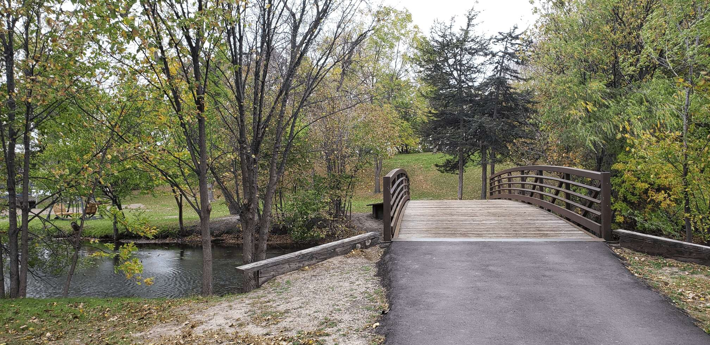

The bridge on the North side of campus (located near Nazareth Hall) leads onto the island.
It goes over Lake Johanna and serves as an excellent spot to stop and enjoy the scenery, or even take some nice photos!
